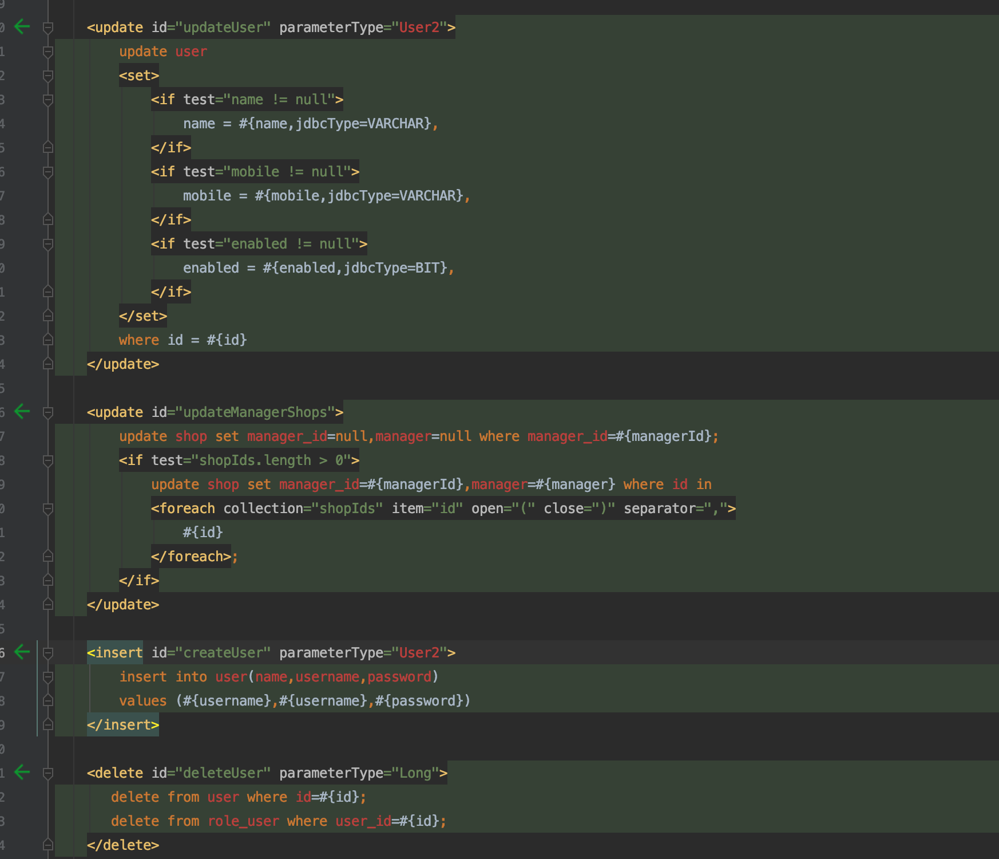

整体脚本
1 | # 拉取阿里云镜像 |
使用 navicat 连接
注意其中的服务名为helowinXDB，用刚才创建的test用户登录即可。

导入数据
使用sys用户登录，选择sysdba角色。
1 | # 进入容器内部 |
1 | # 拉取阿里云镜像 |
注意其中的服务名为helowinXDB，用刚才创建的test用户登录即可。
使用sys用户登录，选择sysdba角色。
1 | # 进入容器内部 |
参考：https://blog.csdn.net/zwx521515/article/details/77982884
但是根据这个进行配置会有一些问题，所以写这篇记录一下，希望可以帮助其他人
开始：
1 | docker pull registry.cn-hangzhou.aliyuncs.com/helowin/oracle_11g |
下载的过程少长，等待吧，喝杯咖啡，休息一会！（镜像 6.8G）
下载完成后 查看镜像： docker images
可以看到已经下载好了
docker run -d -p 1521:1521 –name oracle11g registry.cn-hangzhou.aliyuncs.com/helowin/oracle_11g
这里说一下，命令后面的地址一定要是你下载的镜像地址也就是你拉取镜像名字，否则会出现名字已存在等问题！
如果创建成功能会返回容器 id
docker start oracle11g
④、进入镜像进行配置
1、 docker exec -it oracle11g bash
2、进行软连接
sqlplus /nolog
发现没有这个命令，用不了
3、切换到 root 用户下
su root
密码：helowin
注意这里还是在容器当中。。有朋友退去了。。。。。。。
4、编辑 profile 文件配置 ORACLE 环境变量
1 | export ORACLE_HOME=/home/oracle/app/oracle/product/11.2.0/dbhome_2 export ORACLE_SID=helowin export PATH=$ORACLE_HOME/bin:$PATH |
在最后加上
保存并退出 ：wq
5、创建软连接
ln -s $ORACLE_HOME/bin/sqlplus /usr/bin
6、切换到 oracle 用户
这里还要说一下，一定要写中间的内条 - 必须要，否则软连接无效
sqlplus /nolog
conn /as sysdba
接着执行下面命令
alter user system identified by system;
alter user sys identified by sys;
也可以创建用户 create user test identified by test;
并给用户赋予权限 grant connect,resource,dba to test;
当执行修改密码的时候出现 ： database not open提示数据库没有打开，不急按如下操作
输入：alter database open;
**注意了：这里也许还会提示 ： ORA-01507: database not mounted**
不急！继续！
=========== 解决方法===========
输入：alter database mount;
**输入 ：alter database open;**
然后就可执行 修改数据库密码的命令了
改完之后输入：ALTER PROFILE DEFAULT LIMIT PASSWORD_LIFE_TIME UNLIMITED;
刷新下表
exit 是退休 sql 软连接
之前我们把端口映射到了 1521 上，所以我们需要进行配置 tnsnames.ora
几个朋友不知道 ora 文件在哪，所以添加了这一步
pl/sql 安装包，汉化包，秘钥工具 https://download.csdn.net/download/qq_38380025/11168289
plsql 安装配置工具包 https://blog.csdn.net/qq_38380025/article/details/89677588
1 | docker_oracle11 = (DESCRIPTION = (ADDRESS_LIST = (ADDRESS = (PROTOCOL = TCP)(HOST = 192.168.211.135)(PORT =1521)) ) (CONNECT_DATA = (SERVICE_NAME = orcl) )) |
打开 pl/sql 进行登录 ：提示监听程序当前无法识别连接描述符中请求的服务
这时我们需要去看一下 oracle 的 lsnrctl 服务
看到这两个了么，任选其一，修改 tnsnames.ora 的 service_name=helowinXDB
1 | docker_oracle11 = (DESCRIPTION = (ADDRESS_LIST = (ADDRESS = (PROTOCOL = TCP)(HOST = 192.168.211.135)(PORT =1521)) ) (CONNECT_DATA = (SERVICE_NAME = helowinXDB) )) |
欧克，登录成功。
有几个朋友用的是 navicat 连的所以故此添加这一步
打开 navicat 后（navicat12 不用配置 oci.dll 文件了）
直接新建连接


项目开发中经常需要加载外部资源文件，@PropertySource给我们提供了极大的便利。但是@PropertySource目前不支持 yml 文件的解析，由于 yml 结构清晰等优点，使用频率也会越来越高。
1 | (ElementType.TYPE) |
注意 factory 这个属性，作为解析资源文件的工厂类，默认实现是 DefaultPropertySourceFactory：
1 | public class DefaultPropertySourceFactory implements PropertySourceFactory { |
我们只需要自定义一个工厂类 ResourceFactory，继承这个 default 工厂，重写 createPropertySource即可：
1 | public class ResourceFactory extends DefaultPropertySourceFactory { |
新建测试文件 sso.yml：
1 | sso: |
结合 @ConfigurationProperties实现 sso 配置类注入：
1 |
|
test 方法作为测试输出当前信息：
1 | Sso(url=http://www.baidu.com, name=sso-service) |
下载如下插件，然后重新启动 IDE 即可：


TODO
linux 查找目录下的所有文件中是否含有某个字符串
1 | grep -rn "runlog" * |
1 | # 下载 |
1 | helm create example |
本文介绍 Docker 镜像的导入导出，用于迁移、备份、升级等场景，准备环境如下：
涉及的命令有 export、import、save、load
命令
docker save [options] images [images...]
示例
docker save -o nginx.tar nginx:latest
或
docker save > nginx.tar nginx:latest
其中-o 和>表示输出到文件，nginx.tar为目标文件，nginx:latest是源镜像名（name:tag）
命令
docker load [options]
示例
docker load -i nginx.tar
或
docker load < nginx.tar
其中-i 和<表示从文件输入。会成功导入镜像及相关元数据，包括 tag 信息
命令
docker export [options] container
示例
docker export -o nginx-test.tar nginx-test
其中-o 表示输出到文件，nginx-test.tar为目标文件，nginx-test是源容器名（name）
命令
docker import [options] file|URL|- [REPOSITORY[:TAG]]
示例
docker import nginx-test.tar nginx:imp
或
cat nginx-test.tar | docker import - nginx:imp
nginx:latest是 save 导出 load 导入的，nginx:imp是 export 导出 import 导入的。可以依据具体使用场景来选择命令
Helm 有两个重要的概念：chart 和 release。
chart 是创建一个应用的信息集合，包括各种 Kubernetes 对象的配置模板、参数定义、依赖关系、文档说明等。chart 是应用部署的自包含逻辑单元。可以将 chart 想象成 apt、yum 中的软件安装包。
release 是 chart 的运行实例，代表了一个正在运行的应用。当 chart 被安装到 Kubernetes 集群，就生成一个 release。chart 能够多次安装到同一个集群，每次安装都是一个 release。
Kubernetes Helm 是一个管理预先配置 Kubernetes 资源包的工具，这里的资源在 Helm 中也被称作 Kubernetes charts。使用 Helm 可以：
Helm 包含两个组件：Helm 客户端和 Tiller 服务器，如下图所示。
Helm 客户端负责 chart 和 release 的创建和管理以及和 Tiller 的交互。Tiller 服务器运行在 Kubernetes 集群中，它会处理 Helm 客户端的请求，与 Kubernetes API Server 交互。
所有运行 kubectl 的节点均需要安装
1 | curl https://raw.githubusercontent.com/helm/helm/master/scripts/get | bash |
1 | helm version |
安装安装的版本为 2.12.1，tiller 服务器还没有安装所以有一个报错
helm 有很多子命令和参数，为了提高使用命令行的效率，通常建议安装 helm 的 bash 命令补全脚本。
1 | helm completion bash > .helmrc && echo "source .helmrc" >> .bashrc |
重新登陆后，就能通过 TAB 自动补全 helm 命令的子命令和参数了。
所有节点上面导入 tiller.tar，下载地址：tiller.tar
1 | docker load -i tiller.tar |
创建 tiller-rbac-config.yaml 文件，加入以下内容
1 | vim tiller-rbac-config.yaml |
运行以下命令创建 tiller 服务账号
1 | kubectl apply -f tiller-rbac-config.yaml |
Tiller 服务器安装非常简单，只需要执行 helm init，这里我们指定使用上一步创建的服务账号。
1 | helm init --service-account tiller |
1 | kubectl get pods --namespace kube-system |
可以看到 tiller 已经是运行状态。
1 | helm version |
搜索 wordpress 的 charts
1 | helm search wordpress |
创建 wordpress 的时候需要申请 PersistentVolumeClaim，由于我们的环境不支持动态申请所以需要手动创建
1 | helm inspect value stable/wordpress |
可以看到 wordpress 的 chart 需要两个 pv，分别用于 mariadb(8G) 和 wordpress(10G) 的数据存储。
创建 create-pv.yml 文件，输入以下内容
1 | vim create-pv.yml |
创建 pv
1 | kubectl apply -f create-pv.yml |
1 | helm install --name wordpress stable/wordpress |
输出分为 3 部分（上文输出结果中的 ①②③）：
使用 http://nodeip+service_port 访问 wordpress，访问地址为：http://172.20.6.116:31051/
其他信息，包括后台地址，管理员账号等信息可以参考 release 的 NOTES 部分。
Helm 的使用有点类似 ubuntu 的 apt 或者 RHEL 的 yum，极大的简化了部署一个应用的流程。对于使用者而言，使用 Helm 后不用需要了解 Kubernetes 的 yaml 语法并编写应用部署文件，也无需考虑应用的各种依赖，可以直接通过 Helm 下载并在 kubernetes 上安装需要的应用。
除此以外，Helm 还提供了 kubernetes 上的软件部署，删除，升级，回滚应用的强大功能。
1、统计当前文件夹下文件的个数，包含子文件夹
1 | ls -lR|grep "^-"|wc -l |
2、统计当前文件夹下目录的个数，包含子文件夹
1 | ls -lR|grep "^d"|wc -l |
3、统计当前文件夹下文件的个数，不包含子文件夹
1 | ls -l |grep "^-"|wc -l |
4、统计当前文件夹下目录的个数，不包含子文件夹
1 | ls -l |grep "^d"|wc -l |
5、附：
统计输出信息的行数：
1 | wc -l |
将长列表输出信息过滤一部分，只保留一般文件，如果只保留目录就是 ^d：
1 | grep "^-" |